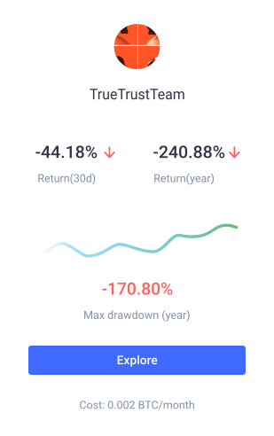
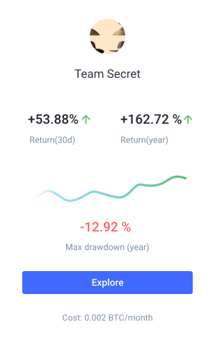
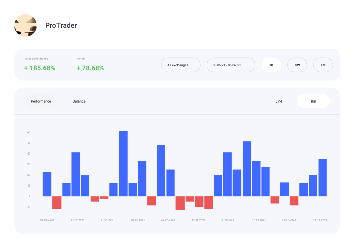
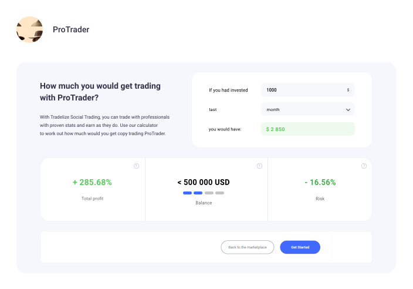
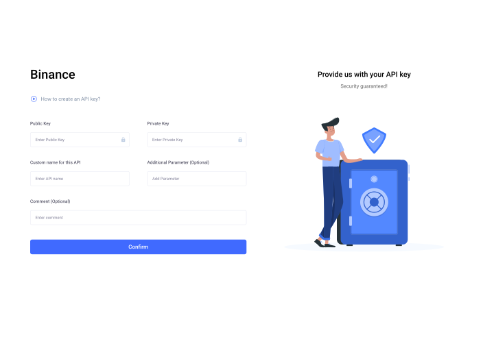

Flow registration slider
-
01. Traders Cards
Working in our system is easy and we are going to show you that. The first step to take is to choose a trader whose operations we will copy.
- 
- 
-
02. Statistic page
Going to the statistics page - you can see all the exact data about the trader for any period you choose. You can go to this page by clicking on the trader's card.
- 
-
03. Subscribe to Copy Trading
Working in our system is easy and we are going to show you that. The first step to take is to choose a trader whose operations we will copy.
- 
-
04. One more step! Just add API
If you have an account on any exchange, you can take the API and add it to the portal. If you do not have an account, select the exchange, create an account there and rather return to us with the API keys.
Connect exchange- 